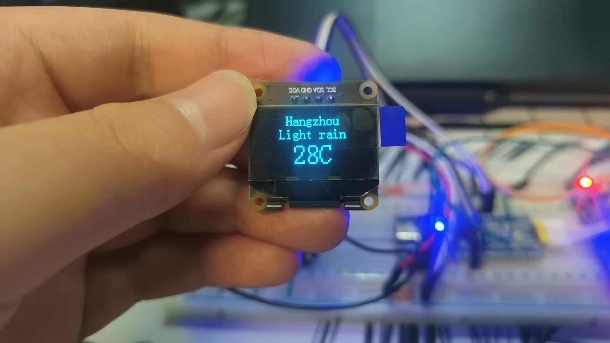
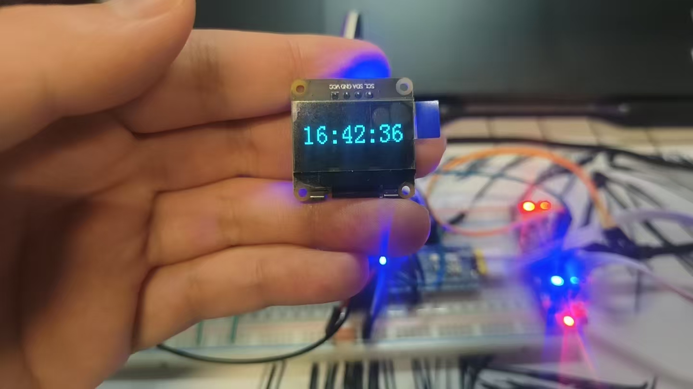

本设计基于 STM32F103C8T6 主控芯片，运行 FreeRTOS 实时操作系统，通过 ESP8266 WiFi 模块连接网络，获取实时天气数据与 NTP 时间同步，在 OLED 屏幕上显示天气信息和时钟。
系统采用多任务架构，将网络通信、数据解析、显示刷新等功能分离为独立任务，通过 FreeRTOS 的任务调度实现高效并发运行，充分展现了嵌入式实时操作系统的设计思想。
系统整体架构、任务划分与 FreeRTOS 配置概览。
架构AT 指令封装、WiFi 连接、HTTP 请求天气数据全流程。
ESP8266NTP 协议原理、时间戳解析与本地时钟校准实现。
NTPJSON 天气数据解析、温度湿度提取与格式化显示。
JSON
